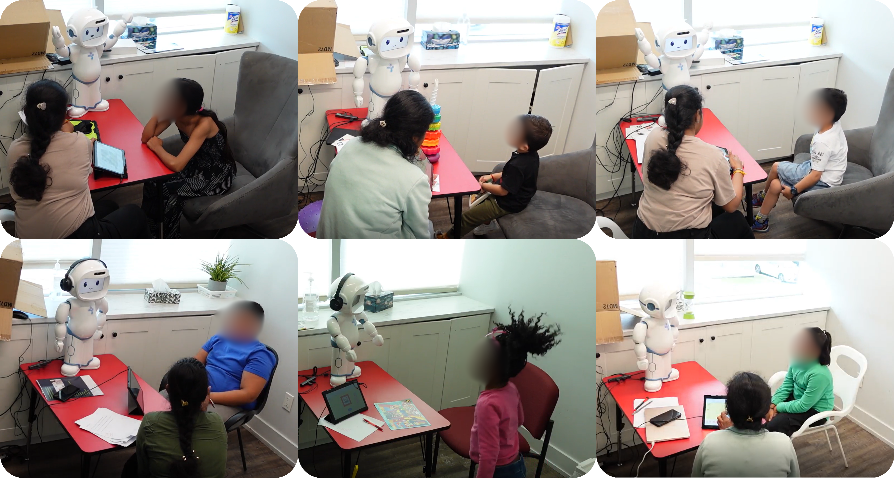

6-Month In-the-Wild Deployment:
Socially Assistive Robots in a Pediatric Speech Therapy Centre
A real-world social robot deployment study of how therapists operate robot interactions in an active pediatric therapy center.
Study Context
Not a lab study. An active clinic.
For 6 continuous months, a socially assistive robot ran in a live pediatric speech therapy center — operated independently by Speech-Language Pathologists (SLPs) in real clinical sessions with children with language challenges. No researcher was in the room. Therapists independently controlled the robot themselves, during actual therapy, with children.
This distinguishes the study from the vast majority of HRI research, which is conducted in controlled lab settings with researcher-operated systems. Here, therapists were the operators, the evaluators, and the users whose needs ultimately determined whether the system succeeded.

Design Process
Built with therapists, not by researchers
The system emerged from 3 years of co-design with SLPs — iterative sessions focused on three core questions: What does SLPs need for their therapies? How should the robot interact with the SLP and children? And what should a robot control system and UI look like?

Key Findings
What the deployment revealed
The deployment surfaced both successes and limitations that are only visible through long-term, in-the-wild study.
The robot sustained children's attention across repeated sessions throughout the deployment.
The robot helped young children transition back to therapy after emotional dysregulation moments.
No technical issues over the deployment period — therapists operated the system without engineering support.
The system needed more diverse activities and adaptive content to sustain long-term clinical use.
All the games and activities were actually pretty good and very useful. Sometimes, I could utilize the robot and carry out multiple tasks for the whole session.
Every feature is useful, but it depends on the individual... we don't know what activity works and what doesn't work with each kid.
— SLP, post-study interview
Research Impact
What changed because of this deployment
The findings directly motivated a pivot in research direction. Pre-scripted systems, no matter how well-designed, cannot sustain in the real world for the long-term. The question shifted: How can domain experts author AI-powered robot interactions independently?
→ Ongoing Work
This deployment is the empirical foundation for an LLM-powered authoring system that enables SLPs to generate, customize, and iterate on AI-driven therapy content without researcher or engineering intervention — replacing rigid pre-scripted interactions with clinician-authored, LLM-executed ones.
System Demos
The system in action
Two views of the deployed system: the tablet-based therapist interface and the robot in session.
Therapist-facing tablet interface during a session
QT robot interaction in a live therapy session
Technical Implementation
How it was built
The system was designed for reliability in clinical environments — high uptime, low-latency response, and a therapist interface that required no technical knowledge to operate.